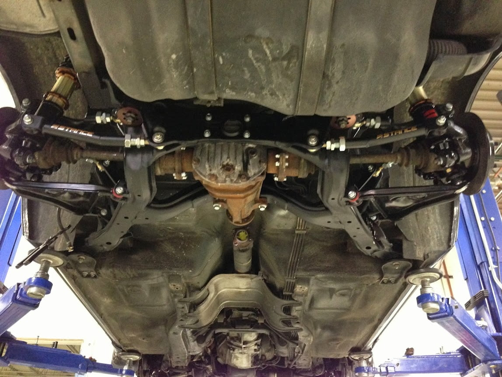

-
Chicago is starting to get warm again. Time to spend money on my bottomless pit. Winter was kind enough to bless me with a wad o cash for the Z. Here are my plans:
upgrade to z32 brakes/booster/master
coilovers stance
wheels and tires (could care less at this point)
s13 subframe swap
Here's my problem. I need to do that subframe swap in order to correct to shit camber that my Z was blessed with. How much is that going to screw up my plans with the previous mentioned items? Are the same coilovers going to work? I already know I'm going to have to convert the rears from 4 to 5 lug and have a pretty good lead on everything I'll need for that. I guess my biggest concern is the coilovers for the front and rear.
Anyone running a 240 rear end with coilovers I'd be interested in seeing what setup your'e running and where to narrow down my research to.
ps no i'm not a noob just looking for answers. check my build thread for proof (Allison 87T) http://z31performance.com/showthread…26-Allison-87TYou can polish a turd....but in the end, it's still a piece of shit -
Are you going to be difting this car?
IMO, if you aren't going to be drifting the car (or seriously racing it) then just do the adjustable camber mod for the stock z31 rear end.
http://z31.com/mods/suspension/rearcamber.shtml
I just put new poly all around and got the PowerTrix Ultra-lite coil overs installed on my Z.
I did the camber fix mod and I was able to get a perfect alignment.
I love the ride now and it handles so much better than stock. -
^Have you even driven a Z with with multilink swap?
It BLOWS the stock setup out of the water in regards to ride and handling, even just cruising around on the street with 180hp.
Z31 Stance can be specified with either Z31 or S-chassis lower portion for the rear, or both. It was designed for this purpose cause 1/2 of the coilover users are on either setup. Since you're in Chicago, you can obtain locally at their headquarters at Touge Factory. They might even give you a deal if you pick up in person.sigpic -
haven't looked too much into just doing the camber mod. I'm not going to be drifting that much. Maybe if I feel like being fast and furious. HOWEVER… I did just finish a complete engine performance overhaul with all forged and ceramic coated internals running a T04 garrett which I'm swapping with a gt35r. 10g in the hole for a ~500hp build…I have a feeling the stock rear end is going to give me problems and the more I read into the s13 rear end swap the more I'm thinking I NEED to do it if I want my car to handle right. Butter I know you've pioneered the way for this swap so thank you. I didn't know I could have different lower portions for the rear. That helps tremendously. I might take a quick trip to togue factory soon since they're not far from me at all. Butter I think i'm no more than 30 minutes from you from looking through all your threads. Hopefully we can meet up sometime once my car is functional.You can polish a turd....but in the end, it's still a piece of shit -
If you can be patient, I have a rodend/adjustable trailing arm conversion kit coming…
However, I'm going to suggest that whatever you _think_ you're going to do right now, will change once you realize what you _can_ do
This is all going to depend on the budget you set aside, having a shop do the rear subframe swap (even starting with a handy swap kit like I produced) is going to cost well over $1000 in labour alone; then adjustable stance multilink, possibly 5-lug hubs, new driveshaft, and all the other ancillaries, will cost about another $1500.
So both alex and butter are right, just coilovers are a huge upgrade, the subframe swap blows it away, but there's a large barrier to entry, you have to decide if it's within your means… -
Multi-link swap everything!!!

95% Confident rear z31 coilovers will work with s13 rear uprights if you remove the slip in adapter sleeves.
Dont forget about exhaust. z31 exhaust no longer works with the muli-link swap, custom one will need to be made.
Dont forget about a custom drive shaft
Dont forget about adapting an e brake
All added expenses to make everything work right.
I have:
1) Stock semi trailing arm with camber correction
2) S13 Multilink
Not even a comparison. Multi link rides some much better, and much more predictable.
Touge Factory is pretty well versed in all of the above. Its worth walking through their front door.86na - BlueZ
Shiro #366 - Kouki Monster
85t - Mr Tickles -
^How much did that whole install end up being?sigpic -
S13's go for an average 0f $2500 so if it costs more than that for the swap Id just pucker up and get an S13 or 14 and be done with it. This is my self justification for not doing this swap and a way to keep loving my Z with all it's shortcomings. Carry on.Cha iro
enjoy building it yourself.
if it fails, fuck it.
at least you gave it a whirl. -
You won't "be done with it" though since they come with a worthless truck motor (I don't care what anyone says to the contrary), and needs to be swapped out right away.
Most of the cost in the sub swap consists of shit you would want to do anyway, like big brakes, custom exhaust, and coilovers.
I see complete subs from drifter part-outs sell for $200 or less. One from a good U-pull-it yard is about the same price. Driveshaft is @$300. Swap kit $?, but if you're handy with the steel (if you know what I mean) you can jam it in there for $0.sigpic -
So therefore it falls under the $2500 price range which makes it an attractive alternative.Cha iro
enjoy building it yourself.
if it fails, fuck it.
at least you gave it a whirl. -
Actual fabrication and installation was not to bad, but I care not to discuss via forum.Originally posted by Butter
But final invoice included all aftermarket parts, 1-off exhaust by Steve, driveshaft/s, alignment, ect… There were not too many hidden cost I did not foresee or plan, so it came within operating 'project budget'. All said and done I was satisfied.
This spring I will swap in my s15 HLSD, new axles, 30a and get another drive shaft made up. Then I will get some pictures since every piece of suspensions a drivetrain will be pretty.86na - BlueZ
Shiro #366 - Kouki Monster
85t - Mr Tickles -
Adam do the hlsd comes with the 5x1 axle stubs like the j30 right? Or are you getting the s15 axles with it? -
s15 HLSD have their own axle stubs needed. Axle stubs bolt to the standard s13 6 bolt axles.
I really dont like the current gearing of the T5 with the 4.11's in the rear. I am swapping to a 30a and wondering if I should source the 3.69 R&P to go with it.86na - BlueZ
Shiro #366 - Kouki Monster
85t - Mr Tickles -
I could care less for S13s. I see too many ricers roaming around in those. Since I already shelled out big bucks for a big engine build I'm not just stopping there. I'd much rather invest the money into making it function the right way. On the plus side I'm thrifty enough to find extremely cheap parts and discountsOriginally posted by Augustus Maximus You can polish a turd....but in the end, it's still a piece of shit
You can polish a turd....but in the end, it's still a piece of shit -
check out this fancy craigslist steal I picked up last week.
[img]
http://i.imgur.com/9gcn3Bd.jpg
[/img]
$150 from some kid who was parting out his s14. He got this from a jdm rear clip. Zero rust and in excellent condition with all new bushings. too good of a deal to pass up.
ps what did I just get myself into??? lolYou can polish a turd....but in the end, it's still a piece of shit

Copyright © 2006–. All rights reserved. Privacy Policy